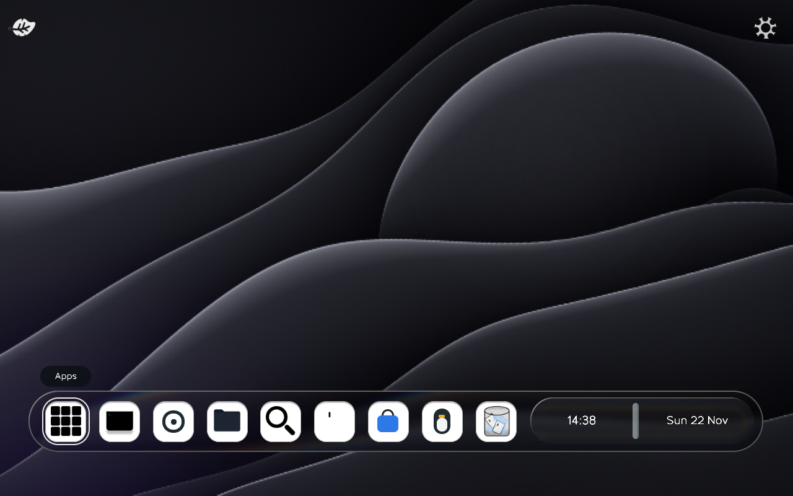
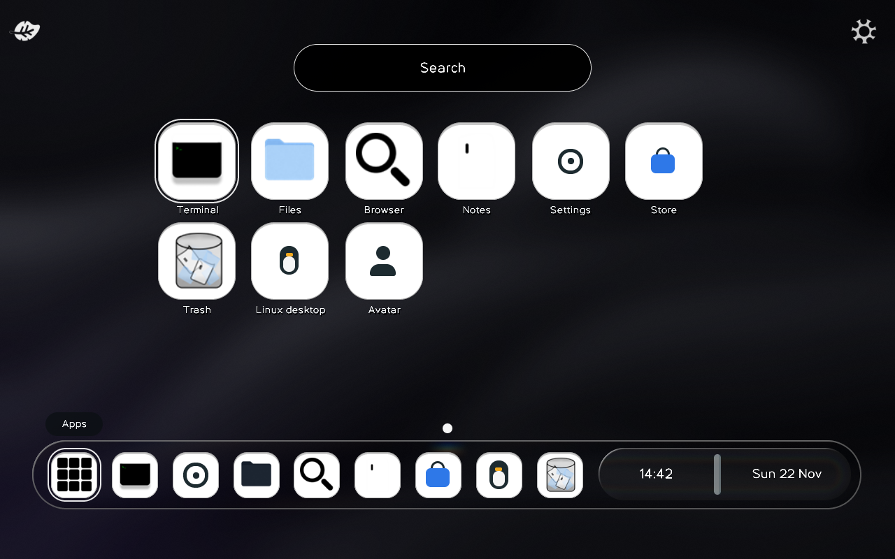
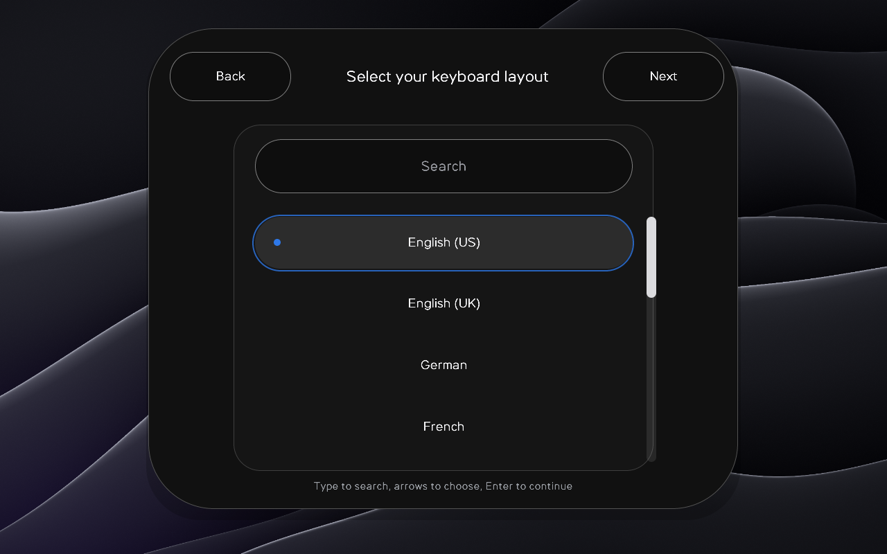

A launcher that gets out of the way
Every app one keypress away. Press the Windows key, type, and go. Pages of apps, search that filters as you type, and a dock that keeps what you use close.
Experimental OS project
AerOS is an independent operating system for 64-bit PCs. Its own kernel, its own desktop, its own drivers, written in Rust from the first line. Install it next to Windows in a few clicks.
AerOS-Setup.exe · Dual-boot installer · Windows 10 and 11



Features
Every app one keypress away. Press the Windows key, type, and go. Pages of apps, search that filters as you type, and a dock that keeps what you use close.
AerOS ships its own AMD-V hypervisor. It boots a real Debian 13 kernel, so Linux software runs right in a window on your desktop.
Browse and install apps with one click. The Store pulls Debian-powered apps and sets them up for you. No terminal required.
Salted password hashing, lockout after repeated attempts, protected system files, and AerOS Shield, a built-in malware scanner with quarantine.
TCP/IP, DNS and TLS written for AerOS. Wired Ethernet, plus Wi-Fi on MediaTek cards.
On AMD Radeon graphics AerOS drives the panel itself at full refresh rate and renders its effects on the GPU.
Ready the moment you sign in.
Every pixel, every packet, every driver. Written for AerOS, by hand, in Rust. No borrowed desktop, no skin on someone else's system. Just a new operating system, built to feel fast.
First boot
Pick your keyboard layout, choose a name and a password, and you're on your desktop. Everything you set is saved and survives a restart.
Installer
AerOS-Setup.exe makes room next to Windows, copies AerOS onto its own partition and adds it to your boot menu. Windows remains your default, and you can remove AerOS from Apps & features at any time.
Get AerOS-Setup.exe and run it. It asks for administrator rights.
The installer checks your PC: UEFI, your disk, and free space on C:.
Choose how much space AerOS gets. Your Windows files are left untouched.
One click boots AerOS once. Windows still starts by default next time.
Secure Boot: AerOS is not signed by Microsoft. If Secure Boot is on, the installer shows you how to turn it off once. If BitLocker is on, keep your recovery key ready before you start.
Compatibility check
Tell us about your PC. The answer updates as you go.
System requirements
Legacy BIOS PCs, Macs and ARM devices are not supported. Linux apps need AMD-V; Intel VT-x support is written but has not been tested on Intel hardware yet.
Supported devices
AerOS is developed and tested daily on the laptop below. Other PCs with similar parts are likely to work, but haven't been tested.
TN3402QA · AMD Ryzen 5 5600H · Radeon Vega 7
OVMF firmware · KVM, WHPX or TCG
Ryzen 4000 / 5000 mobile with Radeon graphics
Developer Preview · November 2026
About 480 MB · Windows 10 and 11 (64-bit) · Requires administrator rights
Read before installing
AerOS is an independent project, built from scratch. It is not finished, it is not a replacement for Windows or Linux, and it will have bugs.
FAQ
No. The kernel, desktop, file system, network stack and apps are AerOS's own, written in Rust. AerOS can run a Debian Linux kernel inside its own hypervisor so Linux apps work, and it reuses parts of Linux's AMD graphics and MediaTek Wi-Fi drivers through a compatibility layer.
No. The installer shrinks drive C: to make a separate partition for AerOS and leaves your Windows files alone. Windows stays the default in your boot menu. Still, any change to partitions carries risk, so back up first.
Open Settings › Apps › Installed apps in Windows, find AerOS and choose Uninstall. It removes the boot entry and the AerOS partition, and gives the space back to drive C:.
Secure Boot only starts systems signed by Microsoft. AerOS is signed with its own key, so the firmware won't start it until Secure Boot is turned off. The installer shows you how, step by step.
Yes. AerOS runs in QEMU with UEFI firmware. The repository's tools folder has scripts that build and start it in a virtual machine.
Open an issue on GitHub with your PC model and what happened. AerOS writes logs to its own partition, which helps a lot.